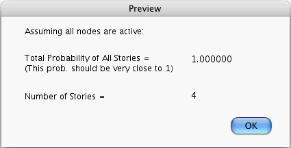

This command causes the computer to calculate, for the case that all node states are active, the total probability of all stories and the number of possible stories. The results of the calculation are reported by the following window: 
[Table Of Contents]